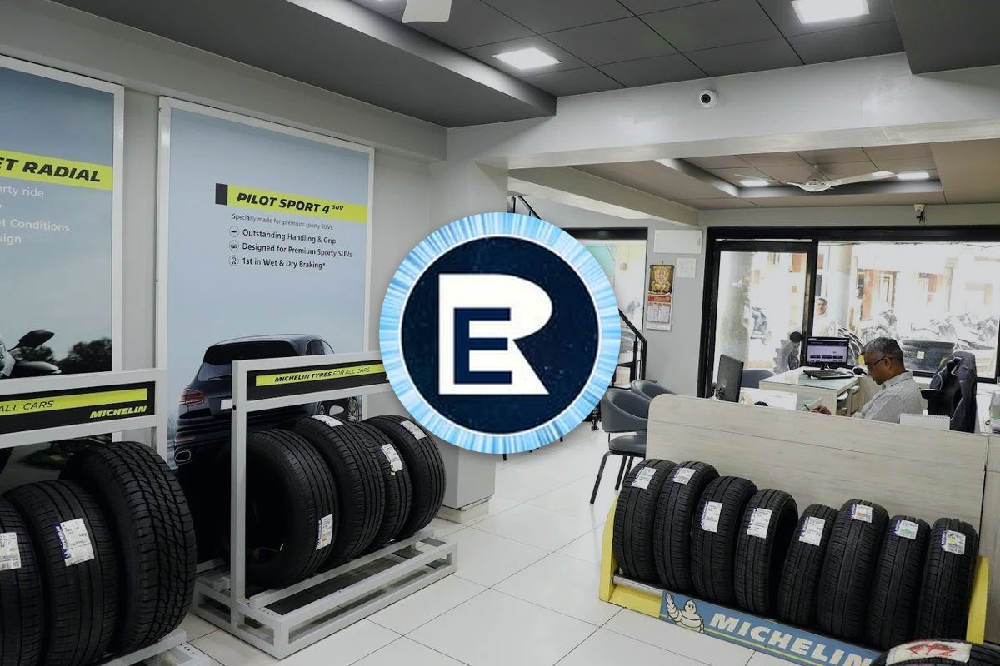
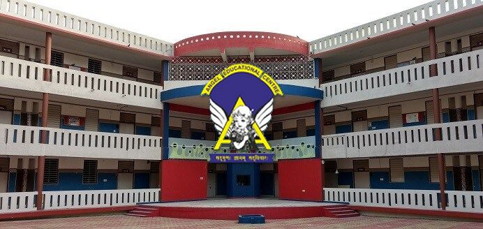
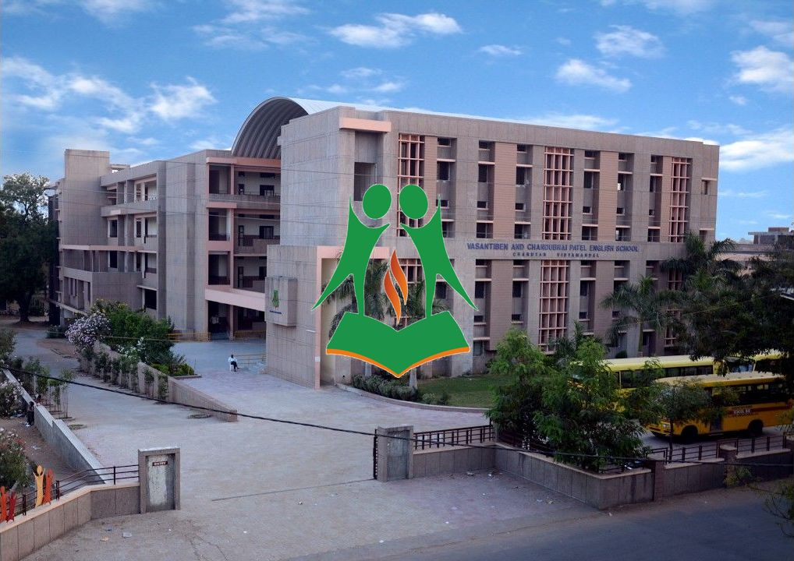
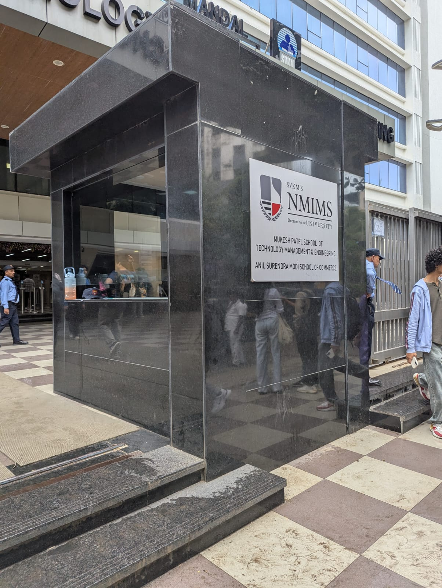
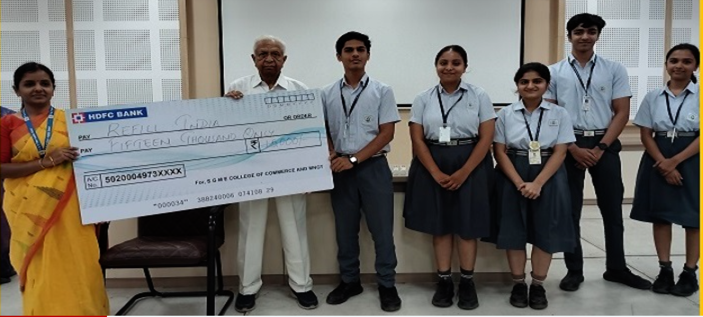

Curiosity first
I like going beyond what I already know: asking why, meeting people and understanding their businesses.
Welcome. Grab a chair.

Hi, I'm Manan, from Anand. Now in Mumbai.
I'm Manan — a curious soul with an appetite for new experiences, big ideas and interesting conversations.
Raised in Anand, now exploring life in Mumbai, I've always enjoyed looking beyond the obvious — whether it's understanding people, discovering unfamiliar worlds or imagining what could be. I like big conversations, unconventional ideas, spontaneous explorations and the occasional laugh over absolutely nothing.
Here for business conversations, new perspectives and a good laugh. Still figuring things out.

Always · Anand
Our family tyre business has served Charotar for 55 years. Being around it since childhood gave me an early view of customers, service and the everyday work behind a business.

Up to grade 10 · Angel Educational Center
I studied at Angel Educational Centre until grade 10. With Carbon Collectives, our team took a sustainability idea beyond the classroom to the national level of the Ministry of Education National Innovation Contest.

Grades 11-12 · VC Patel English School
I moved to VC Patel English School for commerce in grades 11 and 12. Outside class, I co-founded Jeevartan Foundation to support the environment and underprivileged children, and pitched Refill India with schoolmates. Business and community work were becoming things to do together.

Now · Mumbai
Two BBAs in parallel: NMIMS Mumbai and the IIMBx online programme. E-Cell, founder communities and business conversations take that learning beyond lectures. Mumbai gives me more people and perspectives to learn from.

Next · 2030
A personal development journey, not a company: independence, clearer thinking, stronger communication and better business understanding. I share the process as Becoming Manan. The goal is capability, not a finished-success story.
Milestones along the way
A few milestones from those school years.



I like going beyond what I already know: asking why, meeting people and understanding their businesses.
A pitch, a survey or a business blueprint makes an idea something I can examine, not just talk about.
I want ambition to create genuine value. Personal wealth is not the only measure of success.
From Charotar to Mumbai, different people bring different perspectives. Growth should create opportunities for others too.
Away from business, I read, work on myself and stay involved in community work. Sustainability and Indian culture matter to me.
I enjoy Mumbai's founder communities and meeting new people. You do not need a pitch deck to say hello.
Working on communication, clearer thinking and independence. Two degrees give me structure; projects help me put learning to use.

"I'm not defined by a finished destination. I'm shaped by the pursuit."